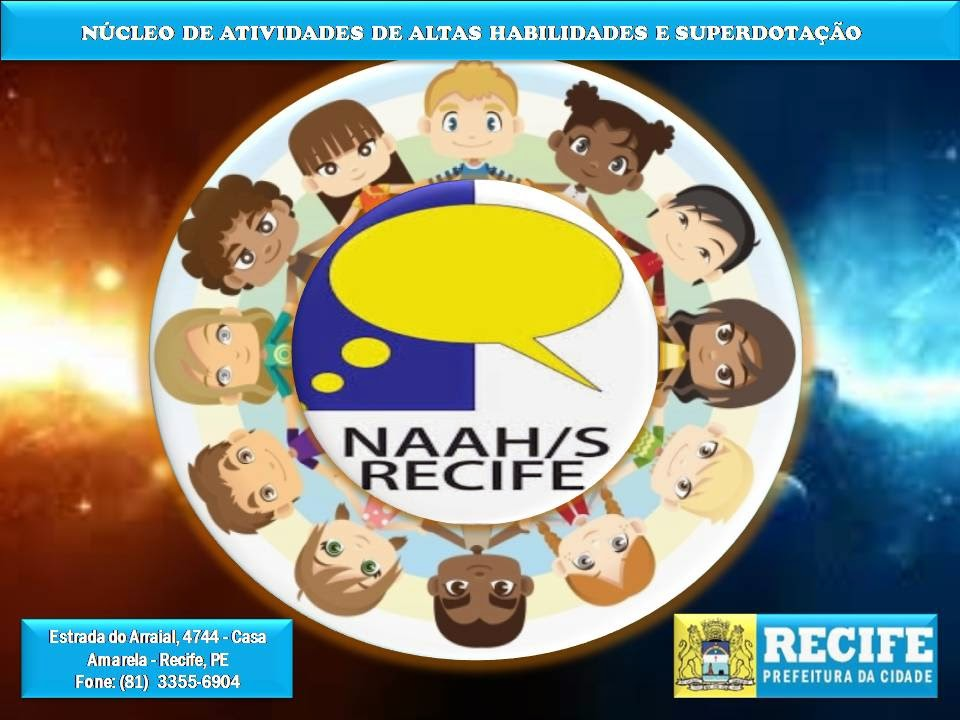

NAAH/s Recife
Os NAAH/S são núcleos de referência voltados para a área de Altas Habilidades/Superdotação. Estes núcleos são responsáveis pelo desenvolvimento de ações que possibilite a identificação/avaliação, organização de proposta pedagógica e de recursos para intervenção junto aos estudantes, cursos de formação e capacitação de professores, acolhimento e apoio às famílias de estudantes que apresentam Altas Habilidades/Superdotação.
Foram implementados pelo MEC/SEESP/UNESCO, como programa a serem implantados pelas Secretarias Estaduais no ano de 2005 nos estados brasileiros, sendo que na Cidade do Recife o NAAH/S desde o início é acompanhado pela Divisão de Educação Especial da Secretaria de Educação da Cidade do Recife.
O NAAH/S Recife promove encontros, palestras, reuniões, plantão pedagógico, oficinas, seminários, simpósios, cursos de formação, capacitação e outros, no sentido da promover a Inclusão Educacional das Pessoas com Altas Habilidades no meio educacional e na sociedade.
No ano de 2014 ocorreu na cidade do Recife o I Simpósio sobre Altas Habilidades/Superdotação & I Encontro de Estudantes com Altas Habilidades de Pernambuco e cujo tema foi: Valorizando as Inteligências para a Vida.
Este evento fez parte do penejamento de trabalho deste núcleo junto a comunidade escolar, professores, coordenadores, gestores, família de estudantes, técnicos educacionais, psicopedagogos, psicólogos e profissionais de áreas afins.
Representou um importante evento que reuniu em torno da temática pesquisadores e profissionais da Educação Especial. Comparecerem ao Simpósio 450 participantes. Nesta oportunidade foram convidados Susana Pérez, atual Presidente do ConBraSD - Conselho Brasileiro de Superdotação e Ângela Virgolim da UNB da (Universidade de Brasília). Foram oferecidos dois mini-cursos ministrados pelas palestrantes convidadas, palestras e oficinas para os estudantes.